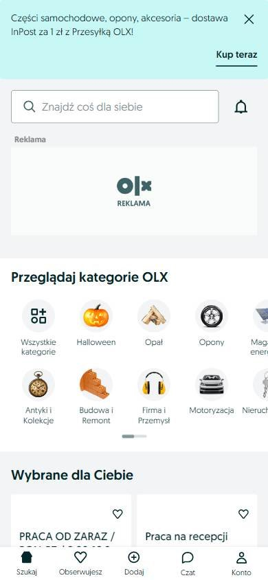

Tienda online que compite por buen precio
Los seleccionados
Los tres sitios más visitados de Polonia, según estadísticas de tráfico.
En resumen: lo que hacen los líderes
La pantalla de inicio de cada uno

Estilo visual
Colores, imágenes, tipografía y cuánta información muestran.
Tu estilo visual debería…
- Un color de marca dominante + un color de acento para ofertas.
Lo que tienen en común: Paletas acotadas de dos o tres colores, con un color de marca muy reconocible y fotos de producto sobre blanco.
La paleta de cada uno
Medida sobre la primera pantalla. Los colores de marca salen del header; el resto muestra cuánto espacio ocupa cada color.
Así lo resuelve cada uno
Ficha comparativa
| Aspecto | Allegro | OLX Polonia | Media Expert |
|---|---|---|---|
| Paleta | Acotada: naranja + blanco | Acotada: azul petróleo + verde lima | Acotada: amarillo + negro + rojo para ofertas |
| Imágenes | Fotos de producto chicas sobre blanco | Íconos ilustrados de categorías | Fotos de producto medianas |
| Densidad | Media | Baja | Alta |
| Botones | Naranja | Azul, recto | Rojo y amarillo |
Header
La franja de arriba con el logo y los accesos.
Tu header debería…
- Fila de íconos a la derecha (favoritos, cuenta, carrito).
- Si es un marketplace, un botón destacado para publicar.
Lo que tienen en común: Logo a la izquierda y fila de íconos a la derecha; dos de tres usan un fondo oscuro o de marca.
Así lo resuelve cada uno


Ficha comparativa
| Aspecto | Allegro | OLX Polonia | Media Expert |
|---|---|---|---|
| Fondo | Blanco | Azul petróleo de marca | Negro + amarillo |
| Logo | Naranja, a la izquierda | Blanco, a la izquierda | Amarillo y negro, a la izquierda |
| A la derecha | Íconos: favoritos, notificaciones, carrito, «Mój Allegro» | Chat, favoritos, cuenta + botón blanco «Dodaj ogłoszenie» | Tienda, cuenta, carrito |
Buscador
La barra para buscar.
Tu buscador debería…
- Botón «Buscar» con texto (no solo lupa), relleno en tu color de marca.
Lo que tienen en común: Buscador ancho con un botón «Szukaj» (Buscar) relleno del color de la marca.
Así lo resuelve cada uno

Ficha comparativa
| Aspecto | Allegro | OLX Polonia | Media Expert |
|---|---|---|---|
| Estilo | Gris claro con selector + botón naranja «Szukaj» | Blanco con ubicación + botón azul «Szukaj» | Blanco en el header |
| Ubicación | En el header | Debajo del banner, protagonista | En el header |
Menú y categorías
Cómo se organizan las secciones.
Tu menú y categorías debería…
- Categorías siempre visibles: en columna al lado del banner o como círculos con ícono.
Lo que tienen en común: Cada uno muestra las categorías de forma visible: botón, círculos con íconos o columna lateral.
Así lo resuelve cada uno


Ficha comparativa
| Aspecto | Allegro | OLX Polonia | Media Expert |
|---|---|---|---|
| Formato | «Kategorie» + accesos | Categorías en círculos de color | Columna de categorías a la izquierda del banner |
Primera pantalla
Lo primero que se ve debajo del header.
Tu primera pantalla debería…
- Banner con el número de la oferta enorme («3000 zł de descuento»).
- Debajo, insignias redondas de descuento sobre los productos.
Lo que tienen en común: Banners de color fuerte con el número de la oferta en grande, seguidos de productos con precio o accesos en círculos.
Así lo resuelve cada uno
Ficha comparativa
| Aspecto | Allegro | OLX Polonia | Media Expert |
|---|---|---|---|
| Formato | Banner con persona + promo en grande | Banner naranja de préstamo (publicidad) | Banner amarillo con descuento enorme + productos |
| Debajo | Accesos en círculos y productos con precio | Categorías en círculos | Ofertas con insignias de descuento |